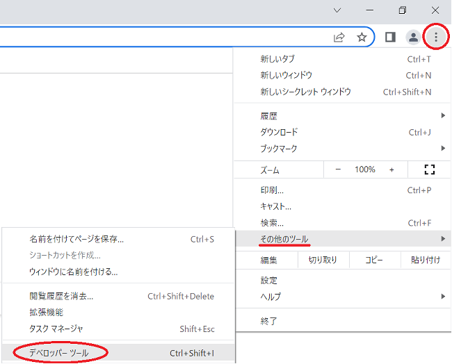

ページの詳細
使用フォント: Roboto , Noto Sans JP (fonts.google.com)
スライダー: Swiper JS
このサイトは子どもにも読みやすいよう、画像を多く、文字を少なめにしています。
使用ソフトウェア・言語・サービス
エディター: Microsoft Visual Studio Code (azure.microsoft.com)
ブラウザ: Google Chrome
OS: Windows10
言語: HTML5 , CSS3 , JavaScript
学習サービス: ドットインストール(https://dotinstall.com/)
学習方法: ドットインストールなどで独学
ページのソースコードを見る方法(スマートフォンでは見ることができません)
Chromium・Chrome
方法1 メニューから開く
1. 縦に並んでいる3つの点(メニューアイコン)をクリック
2. 「その他のツール」をクリック
3. 「デベロッパーツール」をクリック
方法2 ショートカットキーで開く
MacOSの場合
Shift + Command + C
または
Option + Command + I
Windowsの場合
F12
または
Ctrl + Shift + I
それぞれのページで上記の動作をおこなってください。